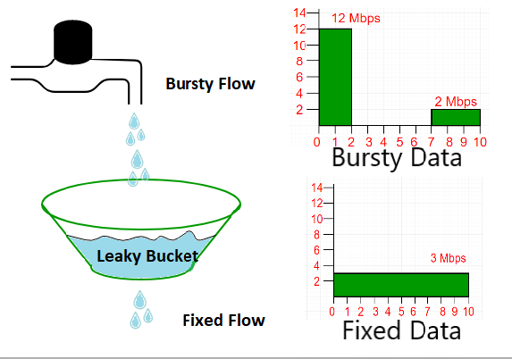
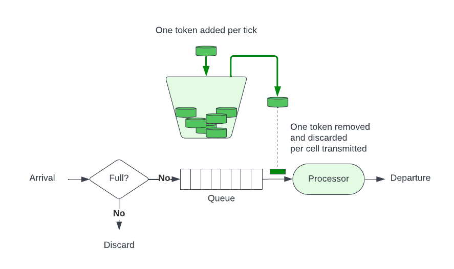

系统的弹性
背景介绍
1999年，Dan Kegel 在互联网上发表了一篇文章，首次将 C10K 问题带入软件工程师的视野。在那个互联网勃兴的年代，计算机的运算处理能力，ISP 能够提供的带宽和网速都还十分有限，用户的数量也很少（那时候一个网站几百个人是很正常的事）。Dan Kegel 却已经敏锐地注意到极端的场景下资源紧张的问题。按照他的观察，某些大型的网络站点需要面对高达10000个客户端的并行请求。以当时的通行系统架构，单机服务器并不足以处理这个这个问题（当时绝大部分系统也没有那么大的流量，所以大部分人也没意识到这个问题）。因此，系统设计者必须为 C10K 问题做好准备。在那篇文章之中， Dan Kegel 提出了使用非阻塞异步 IO 模型，和使用各种内核系统调用黑魔法来提高系统 IO 性能的方式，来提高单机的并行处理能力。不得不说，这篇文章在当时很有先驱意义，它使得大规模网络系统的流量问题浮上了水面，也让人们意识到了系统容量建模和扩容提升性能的重要性。在它的启发下，C10K 问题出现了很多变种，从并发 C10K clients，到并发 C10K connections，到 C10K concurrency，可谓百花齐放。针对这些问题，也出现了很多的解决方案：
cpu 密集型？上高频 CPU， 上多核，上多处理器，开多线程/进程。
io 密集型？换ssd。还不够？更改 IO 策略，Reactor/Proactor。调高系统参数（包括但不仅限于文件描述符等系统资源，tcp 协议栈队列大小等等）。windows 出现了 IOCP，Java 把 IO 更新换代，从 BIO 变成了 NIO/AIO。
内存密集型？换 OS，加内存条，使用池化内存，使用各种 kernal call（又是各种黑魔法）。
单机纵向扩容提升（scale up）处理能力有极限，那就来横向扩容提升（scale out）分布式处理。在系统上找一条竖线切开，化整为零，负载均衡，各种 Hash Mod，Round robin 轮番上阵。
时间过去十几年，系统设计师要解决的架构问题，恐怕已经是 C1000K 问题了。
时代的发展，并没有停步于此。
当今系统设计要面临的问题，出现了新的特点：
首先，总有些有限的资源，不像带宽 cpu 一样呼之即来，最典型的例子是火车票、天猫双十一时的秒杀iPad。谚语有云，一只舰队的航行速度，由其中最慢的舰船决定。高并发的千军万马，即使浩浩荡荡地通过了我们设计的各种数据链路，最终到达要争夺各种各样资源的使用权的地方–数据库。这种争夺的互斥性，为我们带来了各种各样的锁（不管是乐观的还是悲观的）。锁是不可避免的。而这种锁的存在，使得一个大型系统的 QPS 和 QoS，严重受到后端数据存储层的制约。相信很多人对常见的 RDBMS 都有各种各样的使用经验。不同场景下不同类型的数据库的 TPS 可以达到几千到上万，甚至几万。但可以明确的看到，这种性能效率，无法和 C10K-C1000K 的系统轻松对接。传统的关系型数据库从关系代数出发的各种范型理论，给其实现戴上了沉重的历史枷锁，大部分的 RDBMS 的性能提升空间的天花板很快就能看到。从阿姆达尔定律出发，这就是系统的不可扩展瓶颈。我们当然可以使用分布式存储或者 NoSQL 来缓解这一问题，但因为 CAP 定律和网络分区现象的存在，我们并不能根本改善虚幻的锁的困境。这种困境的存在，使得一个很高 QPS 的系统的性能，会被后端 TPS 拉住，因而 QPS 并不能无限推高。因为没有 TPS 1000K 的 RDBMS，真正的 C1000K 的系统恐怕是镜花水月，无法实现的。
其次，流量出现了分化。大部分的系统设计的额定性能，总有界限。世界是互连的，但在某些场景下，却会出现要求无限性能的需求。因为带宽和上网设备变得廉价，制造海量网络流量在当今变得非常轻而易举。最典型的例子是，12306每年都饱受人肉 DDoS 攻击的困扰，因为火车票是一种紧俏资源，用户如果刷不到就回不了家，所以一个无效的请求会触发更多的无效请求。一个抢不到票的用户的行为模式会变得好像肉鸡一样，刷不到票就他会无限刷，一台电脑刷不到就换两台，不行再来手机刷，再不行去买抢票插件。网络时代变发达，用户可以发送请求的能力变得无比强大，火车座位却没有变多 ，12306的系统似乎设计得无论多高，都无法承载那么多流量（如果把12306全年的流量可视化出来，恐怕会看到一个非常尖锐的 Spike）。一个很高 QPS 的系统，终究不是一个无限 QPS 的系统。
最后，并没有必要刻意追求 C10K 到 C1000K的高流量设计。软件设计的艺术是掌控复杂性（Complexity），不要为了设计的性能指标使设计失控，无法维护。 一个系统的平均 QPS 和峰值 QPS 完全可以不是一个数量级。如何兼顾这两种运行模式，是一个很大的设计难题。因为为峰值的 QPS 准备的系统在空闲的时候会浪费很多资源，为了设计一个高 QPS 的系统已经带来了很多复杂性（见上面列举的方法），要设计一个弹性伸缩的系统，又要带来更多的复杂性。这些复杂性当然催生了很多新技术的诞生，比如各种弹性云，秒级启动的容器，各种虚拟化技术（根据小道消息，亚马逊的云服务就是这样逼出来的）。但我们是不是真的有必要投入那么多的 effort，来追求这种尽善尽美？逆取不得，且宜顺守。有的时候， worse is better。
溯游从之，道阻且长。溯洄从之，宛在水中央。我们也许可以停下追求 QPS 的脚步，尝试思考下如何用恒定的一般性能（比如，几千的 QPS？），来解决大并发问题。如果我们能够用一些简单的技巧来保护我们的系统，能够过滤掉无效的流量，进而满足极端场景下性能的可靠性需求。
如何保护系统
对 workload 进行分级
在高并发的场景下，有一些请求是低质量的，没有触及到核心系统的核心资源的争夺，而有一些请求则是高质量的，必然要进入核心系统进行有限资源的争夺。保护核心系统的技术手段的中心思想，应该是尽量保证从高质量请求视角下看服务的高可用性，减少低质量请求对核心系统负载能力的干扰。在有些系统分析里，这是对工作负载（workload）进行分级，要按照服务级别来确保可用性标准，优先保护高级别的服务响应
三件利器
缓存、降级和限流，是常见的三种保护系统的利器。这三者相辅相成，最终的目的是把流量的峰值削掉，让蜂拥而至的请求在一个漏斗型的链路里逐渐变少。我们需要追求的效果，就是我们核心系统的正常设计，能够负载最终到达的高质量流量。
缓存
缓存提高了系统的读能力。如果我们能够把很多不需要用到锁的相对静态的资源，放到高速缓存之中，就能剥离掉大部分的低质量请求。这样一个外围系统的存在，就像一个护城河，泾渭分明地把不需要太强大一致性的低质量请求拦在核心系统之外。优秀的缓存，就像一个乘数效应的放大器，可以把一个低负载能力的系统，增幅为一个强大负载能力的系统。一个常见的例子，就是各种骨干网络上 CDN 的存在。
降级
降级，则试图彻底过滤掉低质量的请求。如果核心系统存在多种类型的服务，高质量请求的服务和低质量请求的服务混布（有些低质量请求的依然具有动态性和强一致性，不适合使用缓存），甚至有些弹性系统，出现高质量请求和低质量请求的多租户部署，则系统流量紧张时，有必要关掉所有低质量请求进入系统的可能性。一个常见的例子，就是支付宝在流量紧张的时候（比如双十一大促），会关掉支付宝查询信用卡账单的功能。这种情况下低质量的请求不会混在高质量的请求之中，争夺性能资源，间接放大了核心系统的性能容量。降级的存在，使得系统可能从完全可用（fully functional）的状态，进入部分可用（partially functional）的状态。有损服务虽然不如正常服务体验好，总好过最后大家同归于尽，系统 panic 甚至 crash 要得多。降级不仅保护了核心系统作为被调用的高质量请求响应能力，实际上也保护了调用方的负载能力。因为在复杂调用链路中，如果没有做过异步化改造，链路上的任何一个 callee hangs，会导致整条链路向前所有的 caller 都逐渐 hangs。因为牵一发而动全身的效应，各种层面上的 request 会在前段 caller 里不断累积，进而导致各种 caller 也进入 panic 甚至 crash 的状态。
限流
限流的应用场景，更加广泛。它不需要做各种请求的区分，就可以直接保证进入核心系统的流量不好超过系统的负载能力。限流的中心思想非常简单，即在各种层面上彻底限制住系统的并发能力，不做不着边际的性能承诺，只承诺响应达到 QPS 的负载能力，超过限制的请求，一律拒绝掉。可以说，限流的存在实现了降级的效果。笔者认为，降级和限流的关系，类似 Factory Method Pattern 与 Template Method Pattern 的关系。
开始谈谈限流
实际上我们在工作生活中已经见识过许多限流的例子。
一台机器，明明各种性能指标都还没有打满，QPS 却一直上不去，最后发现是网卡的问题，换了一块新网卡（有时候是换掉交换机上的一根光纤），QPS 马上就上去了。 这是硬件因素在限流。
我们想要下载一个电影，但被百度云的会员限制，没有办法开到全速，充了会员，下载速度立刻就上去了，这是软件因素在限流。
限流可以发生在 OSI 协议栈的硬件部分，也可以发生在软件部分。流量可以被限制在协议的出口端，也可以被限制在协议的入口端。限流还可以发生协议栈之上，有时候，我们可以把底层的协议栈当做空气一样透明，只在应用内部做限流。
我们可以粗略地把将要讨论的问题分为几个小的子问题：常见的限流算法是什么？如何在一台机器上限流？如何在分布式环境中限流？
常见的限流算法
在网上搜一搜，就可以常见的限流算法并不多，大致上分为计数器算法、漏桶（Leacky Bucket）和令牌桶（Token Bucket）。这些算法各有各的长处，但他们都有一个基于配额（Quota） 的设计思路，颇有异曲同工之妙。即要产生请求，必须要得到许可（Permit），通过控制许可的总数，和通过控制许可发放的速度，来实现 QPS 的节流（Throttling）。不同的算法，就是在这些要素上做不同的变化。我们可以把这种算法称作精确限流算法，我们姑且称之为 Rate Limiter Algorithm。
除此之外，实际上还存在一些可以进行不精确限流的模糊限流算法，我们姑且称之为 Concurrency Limiter Algorithm。
并发性和速率实际上是紧密相连的。维基百科上有有趣的讨论。
计数器算法
并发计数器 Concurrency Limiter
这种算法的设计思想，是对一个要限流的资源配上一个计数器。每次请求前对这个计数器进行加操作或者减操作，通过对当前计数器的值与 Limit 值的对比，决定是否允许操作执行（即发放 Permit）。
让我们用一个应用内的多线程环境举例。
方法原型
一个简单的总量计数器如下：
1 | |
这个总量计数器的设计，使得我们可以让我们控制同一瞬间能够处理的请求的数量。聪明的读者可能已经想到了，这是在一种控制并发请求进入临界区访问资源的节流思想，和使用 Java 自带的 Semaphore 异曲同工。
Semaphore 版本
1 | |
唯一的差别是，Semaphore 可以阻塞请求，使得请求最终可以可以执行完成，而使用 atomic 的做法更加简单粗暴，如果没有办法处理请求，就丢弃请求，不再等待。
阻塞与自旋
我们当然可以让 atomic 具备阻塞的能力，但这就要引入自旋了。
1 | |
这种方式的优点是避免了线程上下文切换带来的开销，对于那些“等待时间非常短”的场景，性能会很高。缺点是如果等待时间很长，它会持续空耗 CPU 资源。
总结
基于 Atomic 的实现是快速失败 (Fail-fast)
的，而Semaphore.acquire()则是阻塞等待。前者适用于那些可以被轻易丢弃或由客户端重试的请求，如果引入重试；后者则适用于希望请求最终能被处理的场景。
Rate Limiter Algorithm
这个总量计数器并不与某个特定的时间窗口挂钩，而且又有衰减作用，这也就意味着它能够限制一瞬间的并发总数，并且可以被复用，但我们无法预测它实际控制出的 QPS 数目。所以它是一个 Concurrency Limiter Algorithm。
所以我们可以试着把它和某个特定的时间窗口挂钩，让这个计数器只针对一个时间节点起作用。这就达到了 Rate Limiter Algorithm 的作用。
固定窗口计数器 (Fixed Window Counter)
1 | |
借用缓存的实现如下：
1 | |
在这里，我们使用了一个有效期为2秒的缓存（为了防止时间不准，实际上应该是任何大于1s 的缓存有效期都可以拿来配置缓存）来存储 atomic与当前的时间。每个请求会在当前的时间窗口里尝试增加计数器，如果当前时间窗口内计数器还没有超过 QPS 极限值，就处理请求，否则就进入自旋，等待下一秒的新的缓存计数器的到来。
这种 QPS 算法的时间窗口，最好设置为1秒为单位
以上面的例子为单位，每秒钟诞生一个limit = 1000的计数器是正确的做法。如果为了减少缓存计数器数量，试图用1分钟长度的缓存配合 limit = 60000，有可能在极端情况下会出现，在59秒 和61一共出现120000个请求的情况。此时计数器依然允许这些流量通过，但这三秒的 QPS 已经远远高于1000。使用计数器的 RateLimiter 的简单粗暴方法，只能说是够用，为了防止临界点性能毛刺（Spike）的存在，我们要严格保证生成计数器的数量和顺序，本质上还是有很大的优化空间。
滑动窗口日志 (Sliding Window Log)
1 | |
固定窗口算法之所以会产生毛刺，根源在于它粗暴地将时间分片，忘记了每个请求实际发生的时间点。那么，最精确的修正方法，就是不忘掉它们。
滑动窗口日志 (Sliding Window Log) 算法的核心思想正是如此：记录下每个请求实际发生的时间戳。它在概念上维护了一个以时间为轴的“滑动窗口”，通过精确计算落在这个窗口内的请求数量来做出决策，从而彻底消除了边界问题，实现了最平滑的流量控制。
这种算法通常会借助一个有序的数据结构（如队列或有序集合）来存储请求的时间戳。其工作流程如下：
- 移除过期时间戳：当一个新请求到达时，算法会首先从集合中移除所有已经“滑出”时间窗口的时间戳。例如，如果我们的时间窗口是1秒，那么所有在 (当前时间 - 1秒) 之前的时间戳都会被清理掉。
- 添加新请求时间戳：将当前请求的时间戳存入集合中。
- 计算窗口内请求数：计算集合中当前元素的数量。这个数量，就是过去一个时间窗口内最精确的请求总数。
- 判断并执行：如果该数量小于或等于限流阈值 limit，则允许请求通过；否则，拒绝该请求。
基于 java.util.LinkedList (单机环境)
在单个 JVM 实例中，LinkedList 是一个实现此算法的直观选择。它作为一个队列，可以高效地在头部移除过期的时间戳，并在尾部添加新的时间戳。
要点：在多线程环境下，对 LinkedList 的所有访问都必须是线程安全的，因此需要使用 synchronized 关键字来保证操作的原子性。
1 | |
基于 Redis ZSET (分布式环境)
当限流策略需要跨越多个服务实例时（例如在微服务架构中），就需要一个集中的存储。Redis 的有序集合 ZSET 是实现分布式滑动窗口日志的完美工具。
要点：ZSET 是一个神奇的数据结构，它为每个成员（member）关联一个分数（score）。我们可以将时间戳作为 score，将唯一的请求ID（或时间戳本身）作为 member。Redis 提供了原子性的命令来移除一个分数区间内的成员并计算成员总数，这使得实现非常高效。
为什么要用时间戳？
Redis Sorted Set 中对 Member 的唯一硬性要求是：在一个 ZSET 中，每个 Member 的值必须是唯一的。
如果你尝试用一个已经存在的 Member 去执行 ZADD，Redis
不会添加一个新元素，而只会更新这个现有 Member 的
Score（分数），并且命令会返回 0（表示新增了0个元素）。
使用请求ID是可行的，但有唯一性风险；单独使用时间戳更简单，但有碰撞风险。最稳妥的方案是通过 “高精度时间戳 + 随机数” 的方式来生成一个绝对唯一的 Member，这样能确保限流器既准确又可靠。
1 | |
基于 multi/exec
1 | |
Redis
的MULTI/EXEC提供的原子性，更准确地说是执行原子性，它保证：
- 命令打包：所有在
MULTI和EXEC之间的命令会被打包成一个队列，然后一次性、按顺序地发送给 Redis Server。 - 执行不中断：Redis Server 在执行这个命令队列时，不会被任何其他客户端的命令所打断。 但是，它有一个致命的缺陷：命令在入队时，并不知道之前命令的执行结果。
在我们的限流场景中，我们需要：
- 检查当前窗口的请求数 (
ZCARD)。 - 判断数量是否小于
limit。 - 如果小于，则执行添加操作 (
ZADD)。
如果使用 MULTI/EXEC，客户端的代码逻辑是这样的：
1 | |
当EXEC执行时，Redis
会一口气做完这三件事。但问题在于，ZADD
命令是无条件入队的。客户端必须等到EXEC的结果返回后，才能拿到ZCARD
的计数值。如果此时发现计数值已经超了，就只能再发起一个ZREM
命令去“补偿”，而这个补偿操作和之前的事务并非原子，中间可能已经有其他操作插入，导致逻辑混乱。
简单来说，MULTI/EXEC无法在事务中间实现条件分支逻辑。
基于 zset
1 | |
1 | |
Redis 提供了 ZREMRANGEBYSCORE 这样的命令，可以以极高的效率（O(log(N)+M)）移除一个时间窗口之外的所有记录。
总结
分布式限流器场景下：Redis 事务 vs. Lua 脚本对比表
| 特性 | Redis 事务 (MULTI/EXEC) | Lua 脚本 |
|---|---|---|
| 原子性保证 | 执行原子性 能保证 ZREMRANGEBYSCORE、ZCARD、ZADD 这三个命令连续执行不被打断 |
逻辑原子性 整个脚本在 Redis 服务端以单线程方式原子执行 |
| 条件逻辑能力 | 不支持 无法在事务执行中根据 ZCARD 的结果来决定是否执行 ZADD |
完全支持 可以在脚本内部使用 if currentCount < limit then... 进行条件判断 |
| 解决竞态条件 | 无法解决 这是其致命弱点。客户端必须先无条件执行 ZADD，事后才能知道是否超限，此时已产生竞态条件 |
完美解决 将”检查并设置”作为一个原子操作在服务端完成，彻底杜绝竞态条件 |
| 实现复杂度 | 极高且不可靠 需要客户端实现复杂的”补偿逻辑”(即如果发现超限，再发起一个 ZREM 删除刚刚添加的成员)，这违背了原子性初衷 |
中等 需要在服务端编写一小段 Lua 脚本，但逻辑清晰，且一旦写好，客户端调用非常简单 |
| 性能 | 较差 即使不考虑补偿逻辑的额外开销，客户端和服务器之间也需要更多的交互来判断结果 |
极高 所有逻辑在 Redis 服务端以 C 的速度执行，网络往返只有一次，是性能最优的方案 |
| 主要优点 | 几乎没有优点 在这个特定问题上，几乎没有优点。它给人一种能解决问题的错觉，但实际上并不能 |
原子、高效、简洁 是解决此类”读-改-写”原子性问题的标准和最佳实践 |
| 主要缺点 | 方案不可行 从根本上无法原子性地处理条件判断，导致限流逻辑失效 |
脚本必须高效 由于 Redis 是单线程的，一个缓慢的 Lua 脚本会阻塞整个 Redis 服务。因此脚本逻辑必须简单、快速 |
| 结论 | 不适用 对于需要条件判断的原子操作(如限流器)，MULTI/EXEC 是一个错误的工具 |
最佳选择 是实现一个精准、高效、无竞态条件的分布式限流器的唯一正确且标准的方案 |
滑动窗口计数器 (Sliding Window Counter)
1 | |
滑动窗口日志算法虽然能实现最精确的流量控制，但其对每一个请求都进行记录的方式，在高并发场景下会消耗巨大的内存，这在工程实践中往往是难以接受的。因此，我们需要一种兼顾了精度与资源消耗的折中方案——滑动窗口计数器 (Sliding Window Counter)。
其核心思想是，将一个大的时间窗口，切分成若干个更小的、精细化的“子窗口” (Sub-window) 或称之为“桶” (Bucket)，并为每个子窗口独立维护一个计数器。
这样一来，当时间窗口向前“滑动”时，不再是粗暴地跳跃一整个大窗口的长度，而是平滑地、一格一格地滑过这些子窗口。
1 | |
代码与理论的对应关系
- 子窗口计数器：代码中的
private final AtomicInteger[] subWindowCounters; 就是用来存储每个子窗口计数的数组。使用AtomicInteger是为了保证高并发下计数的原子性和线程安全。 - 定位当前子窗口：
int currentIndex = (int) ((currentTime / subWindowSizeInMillis) % subWindowCount); 这行代码精确地实现了根据当前时间定位到其在环形数组中所属的子窗口索引。 - 窗口滑动：代码中最核心的部分是
tryAcquire()方法中updateLock锁住的代码块。它通过计算当前时间与上次记录时间的差值，来判断时间流逝了多少个子窗口的长度，然后主动将已经过期的子窗口计数器清零，从而实现了窗口“向前滑动”的效果。 - 计算窗口总数：
for (AtomicInteger counter : subWindowCounters)循环遍历并求和，得到了当前整个滑动窗口内的总请求数。
优点与缺点
- 优点：在内存消耗和算法精度之间取得了绝佳的平衡。它仅需固定数量的计数器（与子窗口数量相同），内存占用极低，同时又可以有效地缓解固定窗口算法的极端毛刺问题。
- 缺点：实现逻辑比固定窗口要复杂一些。同时，它依然是一种近似的实现，其平滑程度取决于子窗口的划分粒度，在子窗口的边界上依然可能存在微小的流量突刺。但在绝大多数工程场景下，这种精度已经完全足够。
桶算法
漏桶算法
1 | |

根据维基百科，漏桶算法的描述如下：
- 一个固定容量的漏桶，按照常量固定速率流出水滴；
- 如果桶是空的，则不需流出水滴；
- 可以以任意速率流入水滴到漏桶；
- 如果流入水滴超出了桶的容量，则流入的水滴溢出了（被丢弃），而漏桶容量是不变的。
我们可以把水滴想象成一个个许可。request 们在漏桶里排队，漏桶算法是一个完全定时发令牌的算法，因此这些请求也因此被间隔性地阻滞在桶中，只有通过固定的时间间隔，才能顺利的通过这个漏桶。
Java 程序员看到这里，恐怕很容易联想到一个 Bouded Queue 和一个 Timing Comsumer 的组合。实际上，我们把准备一个定长的 Queue，和一个定时线程池，每次有新的请求发生，都投入这个定长 Queue 中，然后让定时线程池里的 worker 线程定时地取出 Queue 里面的请求，就可以模拟漏桶算法。或者，我们也可以参考以下的代码，来把漏桶赋予许可的部分单独封装成一个 API：
1 | |
我们可以看到，漏桶算法使得不管是任何速度的入（inboud）流量，最后都规规矩矩地变成了固定速度的出（outbound）流量。因此，漏桶算法不仅起到了限流的作用，还可以作为计量工具（The Leaky Bucket Algorithm as a Meter），起到流量整形（Traffic Shaping）和流量控制（Traffic Policing）的作用。但限流算法，也有一个固有的缺点，就是不允许突发流量一次通过，必须严格按照 qps 的时间窗口一个一个地通过漏桶。
令牌桶算法
1 | |

1223 令牌桶算法是一个存放固定容量令牌的桶，按照固定速率往桶里添加令牌。令牌桶算法的描述如下：
- 假设限制2r/s，则按照500毫秒的固定速率往桶中添加令牌；
- 桶中最多存放b个令牌，当桶满时，新添加的令牌被丢弃或拒绝；
- 当一个n个字节大小的数据包到达，将从桶中删除n个令牌，接着数据包被发送到网络上；
- 如果桶中的令牌不足n个，则不会删除令牌，且该数据包将被限流（要么丢弃，要么缓冲区等待）。
在这里，我们可以看到令牌桶算法表现出的和漏桶算法不一样的特点：
- 令牌桶是按照固定速率往桶中添加令牌，请求是否被处理需要看桶中令牌是否足够，当令牌数减为零时则拒绝新的请求；
- 漏桶则是按照常量固定速率流出请求，流入请求速率任意，当流入的请求数累积到漏桶容量时，则新流入的请求被拒绝；
- 令牌桶限制的是平均流入速率（允许突发请求，只要有令牌就可以处理，支持一次拿3个令牌，4个令牌），并允许一定程度突发流量-关键在于令牌桶可以被积累，突发流量可以一次获得令牌桶里全部的令牌，所以令牌桶漏出的突发流量有多大，取决于桶的 capacity；
- 漏桶限制的是常量流出速率（即流出速率是一个固定常量值，比如都是1的速率流出，而不能一次是1，下次又是2），从而平滑突发流入速率；
- 令牌桶允许一定程度的突发，而漏桶主要目的是平滑流入速率；
- 令牌桶算法拿不到令牌的时候，是可以在缓冲区等待的。而漏桶算法请求无法进入漏桶，则只有被丢弃的结局。
- 两个算法实现可以一样，但是方向是相反的，对于相同的参数得到的限流效果是一样的。
由此看来，令牌桶算法的包容性更强。
如果我们同样用 Java 来实现的话，一个简单的令牌桶算法可以用一个 token 计数器来实现。有一个后台线程定期地为计数器进行加值，而众多 request 处理线程则随时地为这个计数器减值，两者处于竞争状态（因此要考虑 Thread Safety 问题）。后台线程如果加满了计数器，会暂时放弃加值操作，request 处理线程如果将计数器减为负数，可以暂时放弃减值并放弃请求或将请求放回缓冲区。
或者，我们也可以参考以下的代码，来把令牌桶赋予许可的部分单独封装成一个 API：
1 | |
如果仔细思考漏桶算法和令牌桶算法，他们适用的场景都比计数器算法要广泛，使用起来对流量的调整也更平滑，而且也不会出现临界点性能毛刺（思考下，为什么），所以是更加健壮的业界通行算法。也因为它们是业界通行的算法（实际上中兴和华为都有关于这两种算法的限流专利。互联网公司遇到的流量问题，被通信公司解决了。其实这也是一种思考和学习的启示，我们在新的领域遇到的新的问题，是不是已经被其他人解决了？这种情况 Dijkstra 也遇到过好几次。），所以 Guava 类库提供了相关的实现，不需要我们自己实现。
Guava 的 RateLimiter 实现
com.google.common.util.concurrent.RateLimiter 是 Guava 并发包中的限流器的抽象类。它有一个子类叫 SmoothRateLimiter。这个 SmoothRateLimiter 又有两个内部子类 SmoothBursty 和 SmoothWarmingUp。这两个子类用不同方式实现了近似令牌桶和漏桶的算法。
其中 SmoothBursty 专门针对大流量设计，允许请求使用未来令牌担保（想象一个允许负数的令牌机制），它不计算当前请求的的等待时间，而是计算下一个请求的等待时间，是一个非常有意思的实现。
而 SmoothWarmingUp 实现了一个类似 TCP 流量拥塞控制“加性增”的算法，基本思路是：系统在未启动和长期不启动后会存在缓存失效等性能下降的问题。在走完预热周期以前不允许达到指定的 QPS。这个实现对突发流量依然有一定的支持，因此并不是一个严格的楼桶算法。
SmoothWarmingUp 的预热算法示意图：
1 | |
RateLimiter 的具体用法颇为复杂，此处就不贴代码了，请读者自行搜索教程和阅读 Github 上的项目文档。
我们应该如何在一台机器上限流
聊了这么多底层的代码和原理，应该想想怎么应用了。
上面已经提到，我们可以使用模糊的并发性限流算法，也可以使用精确而主动的速率限流算法。让我们思路广泛点，想想可以在什么层面上做各种限流。
从操作系统层面，我们可以一开始就限制一个操作系统能够使用的硬件资源，包括但不限于 CPU、内存、硬盘和网卡。现代应用可以借助虚拟机或者容器对资源进行虚拟切割，制造一个有物理极限的操作系统配额限制。
在应用层面，我们可以限制一个进程可以使用的内存和可用的文件描述符数量。
在涉及到 JVM 的应用程序时，我们还可以对内存限制进行细化调优配置。
在涉及到 TCP 协议时，也有很多内核参数可以调节，比如缓冲区队列的大小，irqbalance， MTU 等等。
在上层的应用软件，通常存在一种连接资源池化复用的机制。在 Tomcat/MySQL/Redis 里，通常都有连接数、工作线程数和请求/backlog缓冲区等不同的配置选项（和 TCP 的协议栈实现大同小异）。
在经过这些模糊的限流配置以后，我们可以在应用内部使用上面提到的算法自己实现精确的限流。也可以使用上面提到 RateLimiter 限流，甚至可以使用近几年新出的 Hystrix 做限流（Hystrix 自带一个池化复用的解决方案，感兴趣的读者可以研究下）。
我们应该如何在分布式环境下限流
现代的服务化/组件化应用，在一个虚拟的应用调用背后，往往有若干个真正的服务实例在承载 QPS。这也就意味着，我们对一个服务进行限流，要考虑分布式环境下多个实例的协同问题。
在分布式环境下限流的思路，主要有两种：
- 在一台机器上把所有流量控制住，然后分发给其他所有机器。我们姑且把这种限流思路称为反向代理式限流或者接入层限流。
- 在每台机器上单独做整体限流，然后寻找一个全局协调工具来协调全局的整体流量。我们姑且把这种思路称为协调器限流。
接入层同步限流的方案已经很成熟。
我们常见的反向代理 nginx 里有 ngx_http_limit_req_module 和 ngx_http_limit_conn_module 模块可以提供基于连接/请求测度的限流。在更加复杂的 OpenResty/Kong 上还可以实现各种粒度/维度的限流。
我们应该仔细考虑接入层限流的配置粒度。往接入层的上游来看，是针对自己后置的所有服务共用同一套限流配置，还是针对每一个资源单独一套限流配置？在做这样的配置的时候，要充分考虑后台不同资源的负载能力，使用大一统的配置不适合复杂的流量入口。
在这种分布式场景下限流还要考虑限流维度的问题。
从请求的链路两端来看，是以被调用方资源为维度来限流，还是以调用方请求来源为维度来限流？
以被调用方资源为维度来限流，是一种相当保守的策略，相当于一个资源的总体限流被所有调用方共享了，使一个资源变成了大锅饭。所有的调用方共享一个资源，贪婪的调用方会蚕食其他调用方的 QPS 配额。如果一个调用方的调用频率很高，在资源紧张的场景下，其他调用方会发生饥饿。如果资源的紧张，进一步导致限流策略更趋保守，那真是城门失火殃及池鱼了。
而如果以调用方为维度来限流，则需要引入类似分级的服务区分制度，对不同级别的服务调用授予不同级别的流量许可。这就要求服务在发起调用的时候能够表达自己的身份，而服务接入层可以理解这种身份，而我们可以针对不同的身份做不同的配置。实际上上面提到的几个反向代理，都支持区分调用方的 ip 地址甚至主机名的鉴别方案。但基于 ip 的流量限制还是略显粗疏，除非我们明确地知道请求 ip 地址背后的服务到底是什么（这可以引入一张配置表，可以是一张 excel 表，也可以是一个数据库的 table），否则还是使用某些服务鉴别报头为好。例如，我们可以要求所有的服务调用方都在发起请求时携带一个 requester-header 一样的 http 请求头，对调用链路上下游进行全面改造，然后在请求通过接入层时做专门鉴别。这种设计的思想类似于操作系统的优先级调度，比被调用方维度更为灵活，也需要做更细致的配置。
我们都知道接入层限流依赖于反向代理式的系统架构风格，而这种风格要求我们必须使用把限流放在调用方和被调用方的中间，好像一个仲裁者，有没有其他风格的体系结构呢？这就是我们接下来要谈到的协调器限流。
协调者限流的思想，是通过进程间通信的方法，在多个服务实例之间寻找到一个高性能支持原子化读写（也就意味着并发/并行安全）的存储，维护一个全局的限流计数器，然后多个服务实例通过动态地更新这一个限流计数器，来实现全局的限流配额动态扩散到各个服务节点的效果。通常的情况下，我们可以使用 Redis 的 incr 操作，配合编程语言（Lua/Java）等等来实现这一效果。 Redis 的官网上专门有一个例子，讨论这一问题。在我们得到了每台机器的限流配额以后，我们可以采用之前讨论过的单机限流方法进行限流了。当然，在这个思路上还有其他的延伸，如果不嫌 Zookeeper 的写性能低，也可以考虑使用 Zookeeper。
此外，如果我们的服务之间使用的是异步通信，如使用了 Kafka 或者 AMQP 的队列，可以考虑使用队列限流（阿里的人喜欢说的削峰填谷）。这种限流需要考虑的问题是怎样在 Message Consumer 消息分发时做限流，做设计的时候要考虑多个 Consumer 之间是怎样共享消息队列的（是拉模式还是推模式，是 queue 风格还是 P/S 风格？本 Consumer 的吞吐率能不能影响全局的吞吐率？）。
如果我们的服务之间的通信走的是自定义协议，比如两个服务器之间使用的是类 Thrift 客户端相互通信，那么可以考虑对客户端进行改造。这样不仅可以在请求到达被调用方时进行限流，也可以在流量离开调用方时进行限流。
最后做个总结
总体来讲，限流是为了保护核心系统不要超负荷运行。系统超负荷运行，不仅对被调用者是危险，也对调用者是潜在风险。毕竟被调用者垮了，调用者也不能继续运行下去。限流可以从源头防止系统雪崩。但整个复杂的调用链路的使用场景千变万化，一套死板的限流不可能应付所有情况。所以我们应该有办法正确地识别系统的负载状况，采取对症下药的限流策略。这要求限流系统设计得必须有识别、统计能力（这需要监控系统提供数据输出），也要有动态配置能力。如果流量一上来，没有办法确认源头做细致配置，就盲目地把所有的流量都限死，那么只能保护自己，会造成其他本来正常运行的系统发生没有必要的性能抖动（Thrash），是一种头痛医头，脚痛医脚的方案。
本文写了那么长，总算结束了。下面列一下我囫囵吞枣的参考资料：
- https://liuzhengyang.github.io/2016/12/15/rate-limit/
- http://www.kissyu.org/2016/08/13/%E9%99%90%E6%B5%81%E7%AE%97%E6%B3%95%E6%80%BB%E7%BB%93/
- https://github.com/google/guava/blob/v18.0/guava/src/com/google/common/util/concurrent/SmoothRateLimiter.java#L124:L130
- https://blog.jamespan.me/2015/10/19/traffic-shaping-with-token-bucket
- http://jinnianshilongnian.iteye.com/blog/2305117